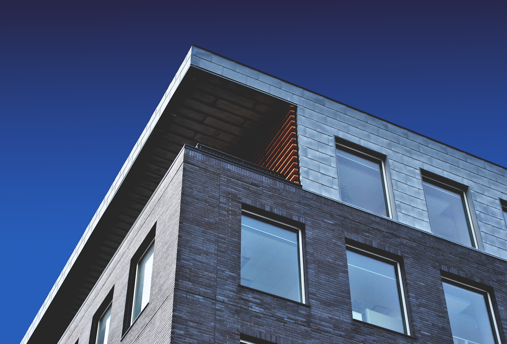
Single design logic
Concept, plans, materials, and site details stay connected instead of becoming separate conversations.
Layered rooms shaped with warm material, quiet proportion, and natural light.
Every room starts with a quiet framework: measured light, exact material edges, and drawings that make the final build feel inevitable.
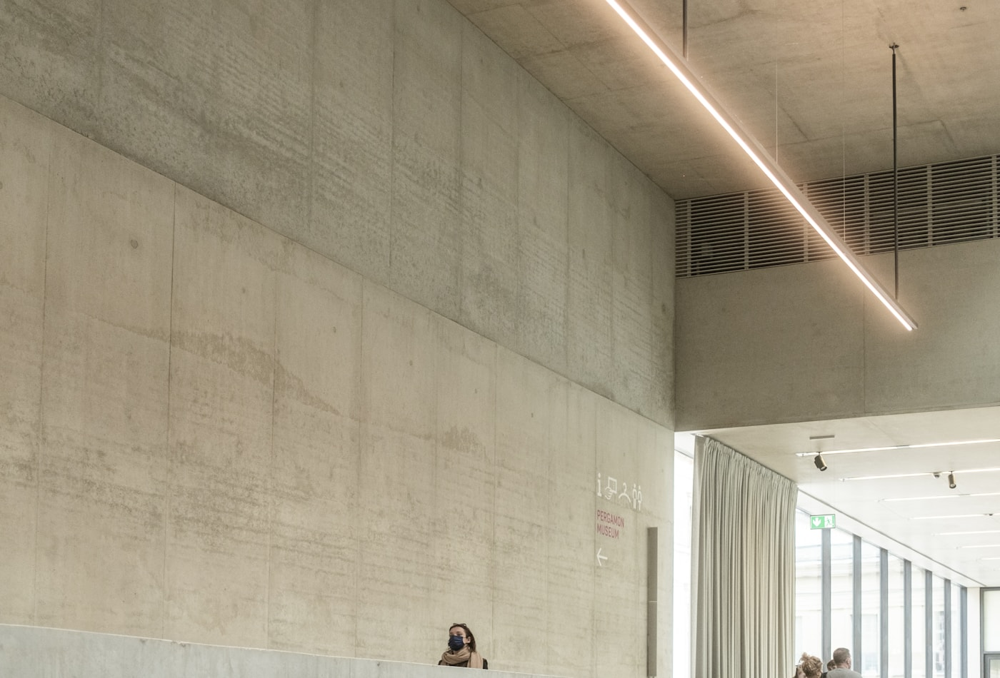
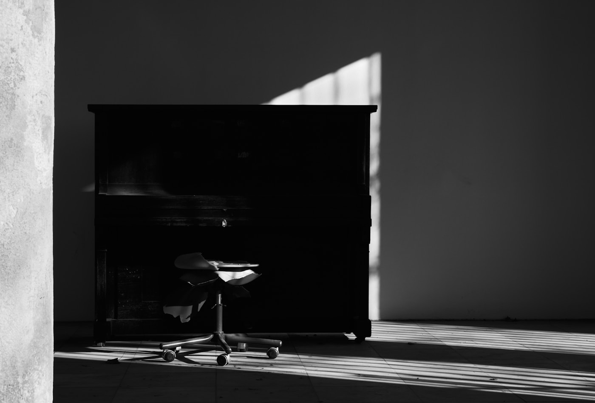
Concept, budget, material, and construction logic stay in one conversation.
Light, movement, structure, and daily rituals are mapped before form is fixed.
Palettes stay restrained, tactile, and practical enough for real construction.
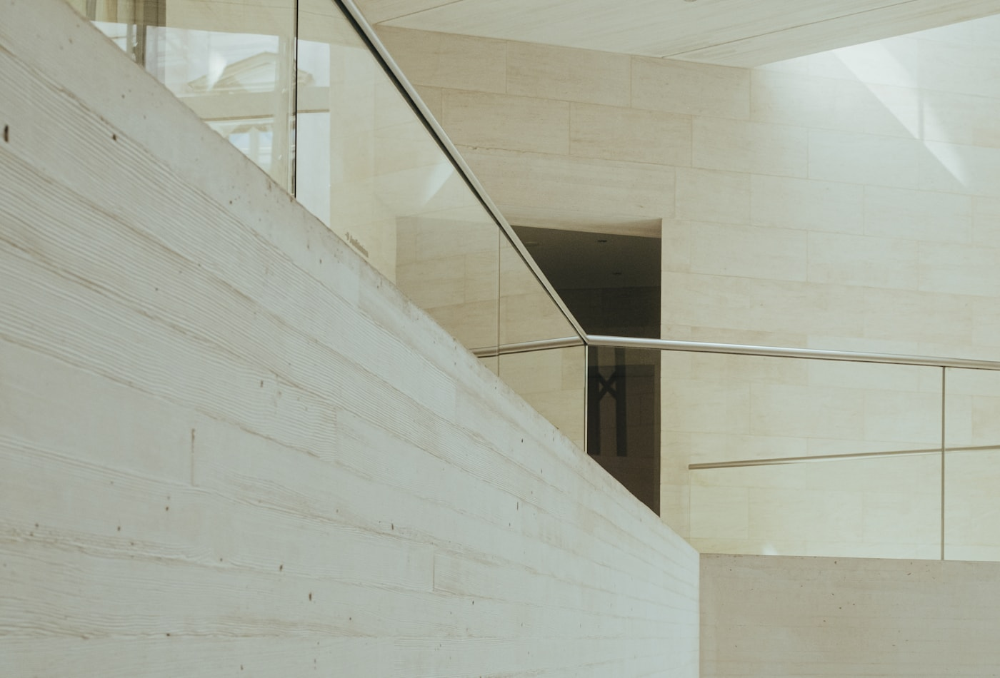
Concept, plans, materials, and site details stay connected instead of becoming separate conversations
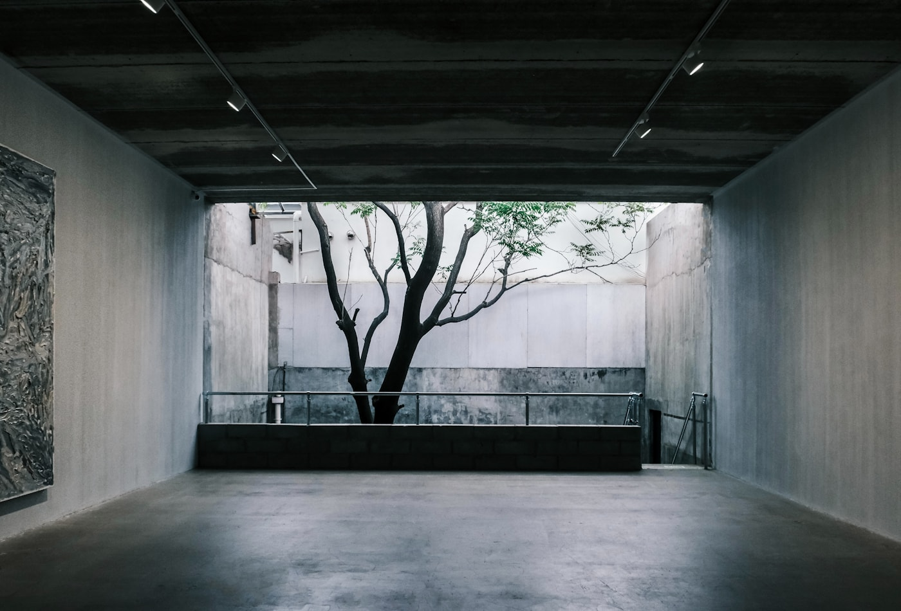

Concept, plans, materials, and site details stay connected instead of becoming separate conversations.
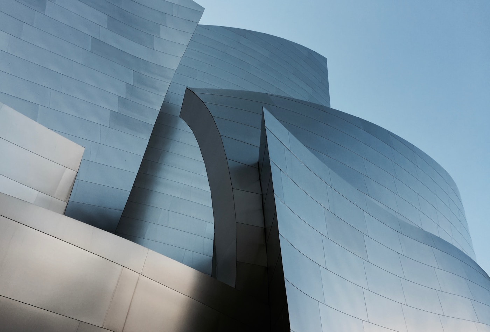
Drawings and specifications are shaped around budget, procurement, sequencing, and real site constraints.
Each room is composed around daylight, proportion, views, texture, and the rhythm of daily use.
Filter-ready project cards with strong photography, editorial spacing, and polished hover states.
Scroll through a layered service system for planning, detailing, materials, and site delivery.
Light, movement, structure, views, and daily rituals are mapped before the first resolved plan.

Plans, elevations, joinery logic, and finishes are developed into a coherent design package.
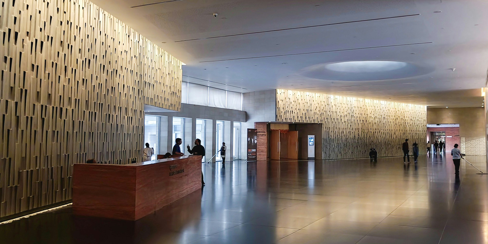
Concept diagrams, plans, renders, and project narratives are shaped into sharp visual boards.
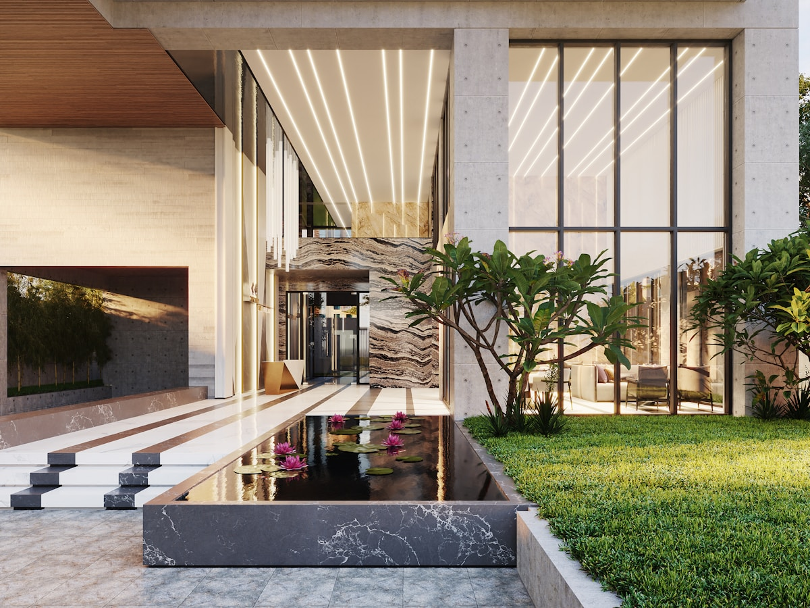
Materials are selected for proportion, tactility, cost, longevity, and construction sequence.
On-site questions, revisions, procurement, and final styling are coordinated with calm precision.

We connect brief, drawings, materials, budget, and site decisions so every stage has a sharper next step.
Goals, site limits, budget, lifestyle, and spatial priorities are aligned before design starts.
Plans, mood, volume, and key material direction move together without slow handoffs.
Weekly reviews turn drawings and material choices into practical construction decisions.
We build drawing sets, palettes, and site notes your team can return to throughout delivery.
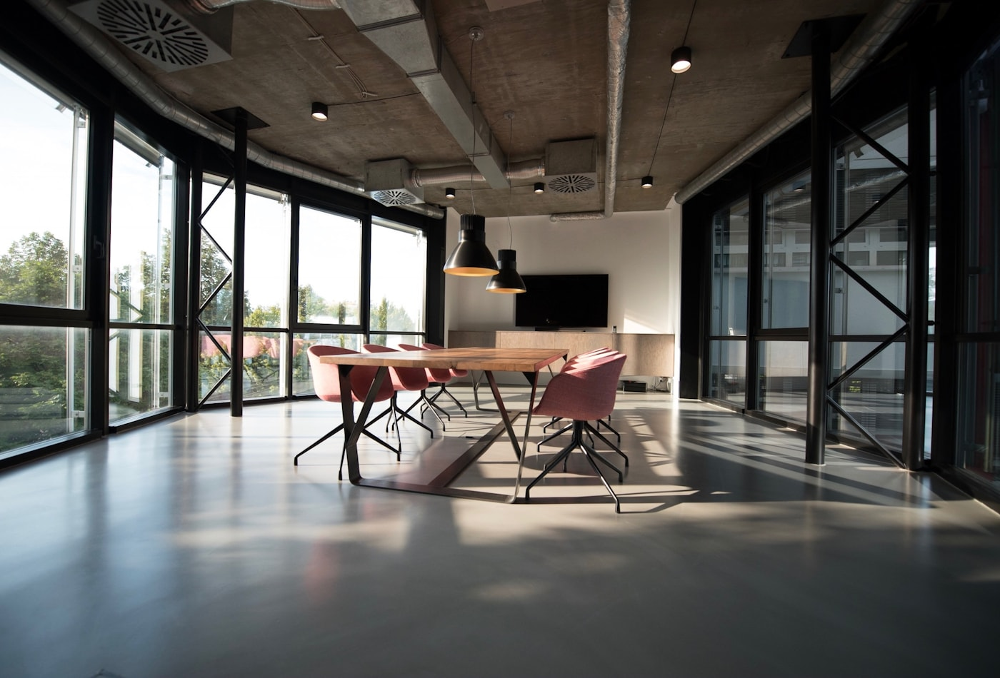
Feedback from homeowners, founders, and developers who needed the design process to stay clear from first brief to final handover.
Field notes on light, materials, presentation, and the decisions that help architecture feel composed.
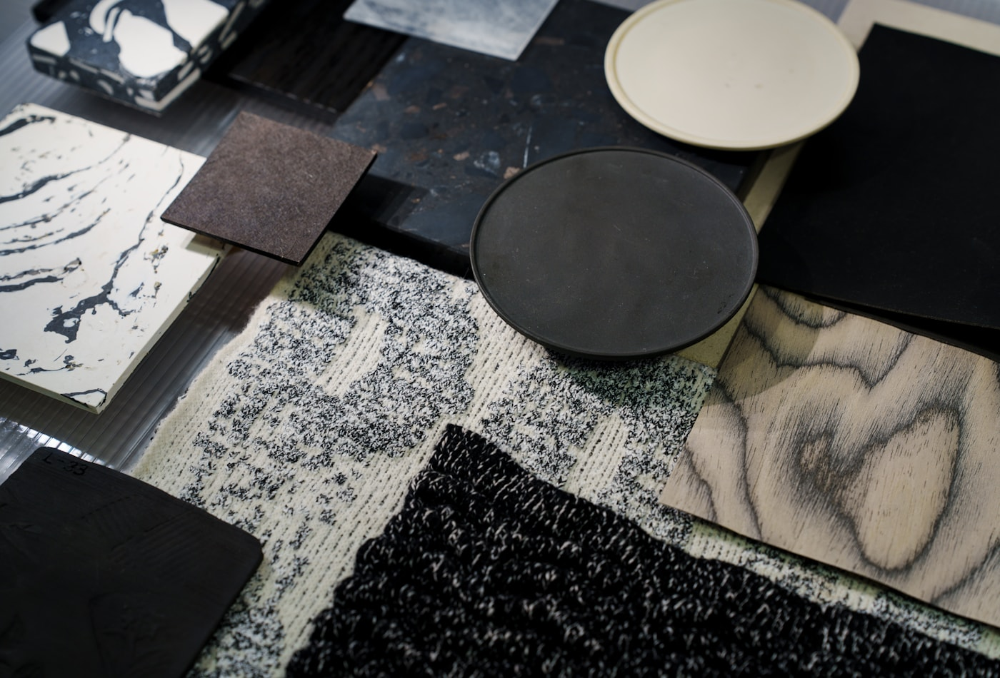
Practical thinking for studios, clients, and makers shaping better places.
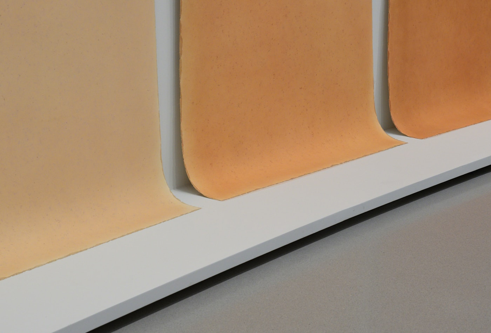
How restraint, texture, and maintenance shape better rooms.
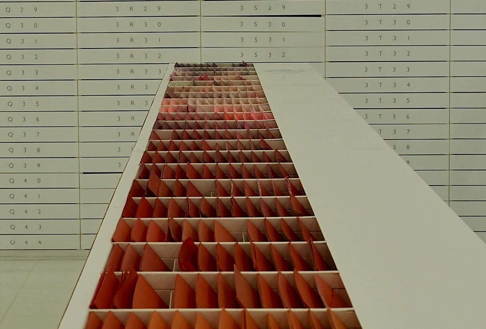
Sharper boards, calmer decisions, and clearer project momentum.